Aki, Kochi: things to do, food and stays
Aki · Kochi
Aki
Highlighted on the Kochi map.

Stay
private villa YUHIMI ～夕日見の丘～
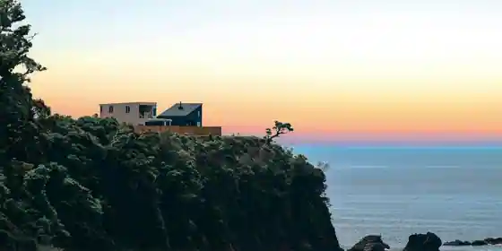
private villa YUHIMI ~ Yuhi Mino Oka ~
Inn at Shikirinotennen Onsen in Akanokabuto, Aki.
VILLA URARA THE COAST
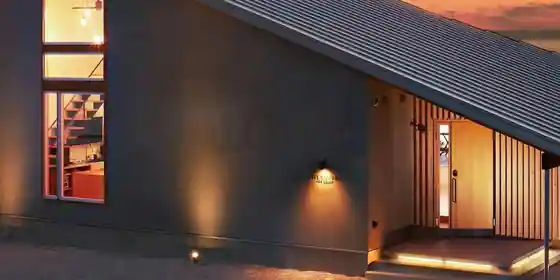
VILLA URARA THE COAST
Inn in Akanokabuto, Aki with one group per day.
HOTEL MONONOBA
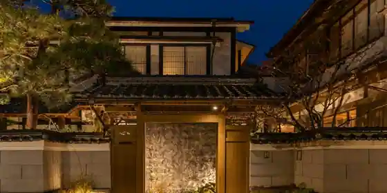
HOTEL MONONOBA
清月旅館
Seigetsu Ryokan
Ryokan inn in Yanomaru, Aki with Wi-Fi.
ホテルＴＡＭＡＩ
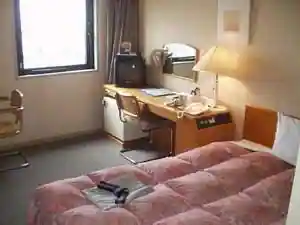
Hotel TAMAI
ジローのおうち
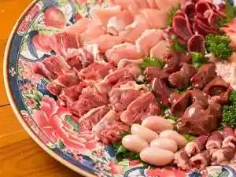
Jiro Nochi
Dining
安芸しらす食堂
Aki Shirasu Shokudo
国虎屋
Kuni Tora Ya
廓中ふるさと館
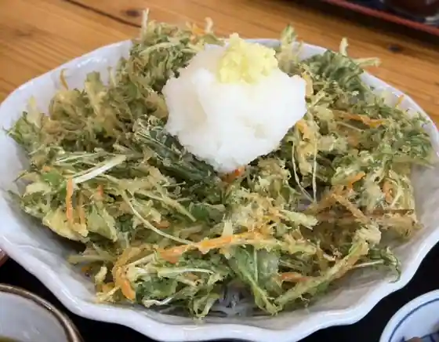
Kaku Naka Furusato Kan
いおき家
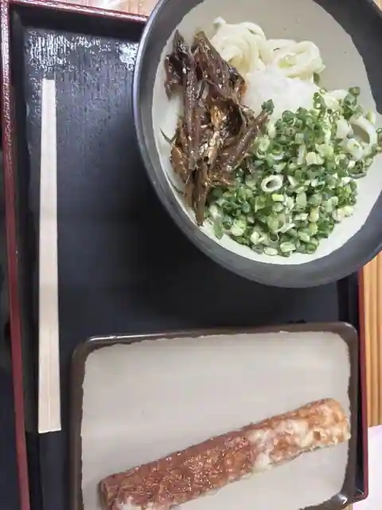
Ioki Ie
一音灯
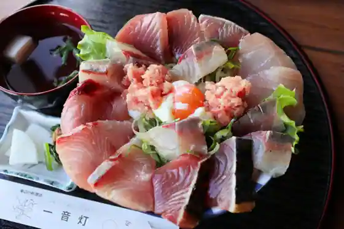
Ichion Tomoshibi
道の駅大山
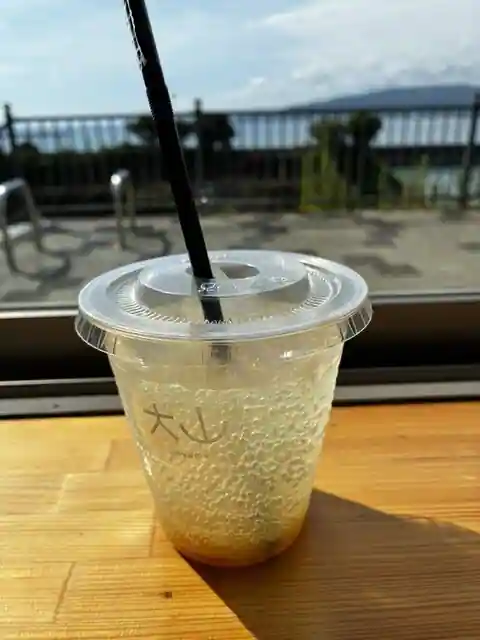
Michi No Eki Oyama
安芸グループふぁーむ 安芸本店
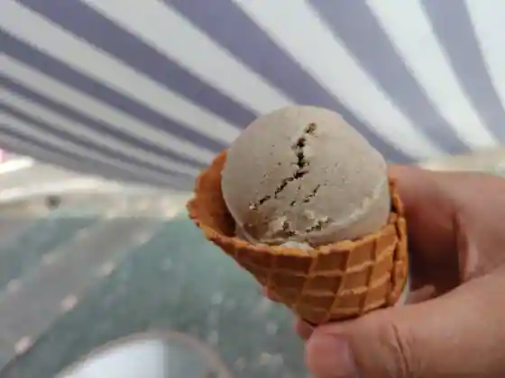
Aki Gurupu Famu Aki Hon
まえだ食堂
Maeda Shokudo
ちーず屋
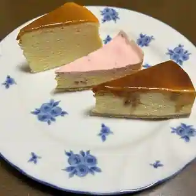
Chizu Ya
ホテルTAMAI
Hotel TAMAI
りすぼん
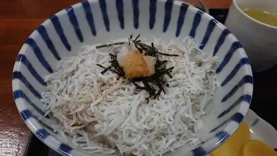
Risubon
はっしゃん居酒屋
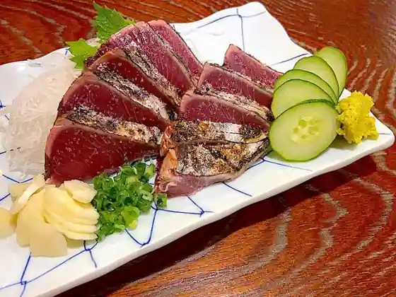
Hasshan Izakaya
シェヌー
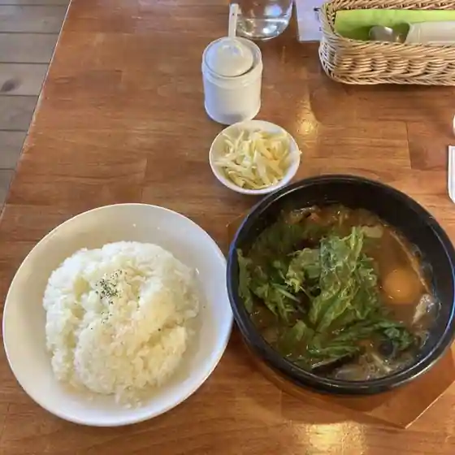
Shienu
洋菓子倶楽部
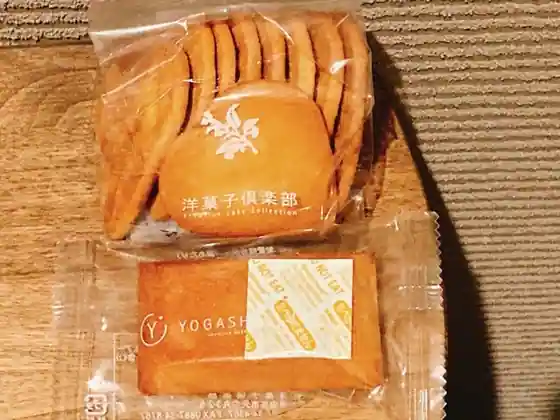
Yogashi Kurabu
白牡丹
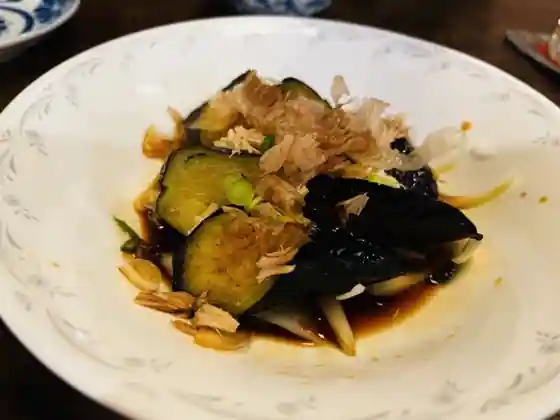
Shiro Botan
錆と煤 満寿店
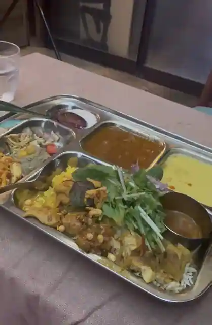
Sabi To Susu Manju
フジムラ
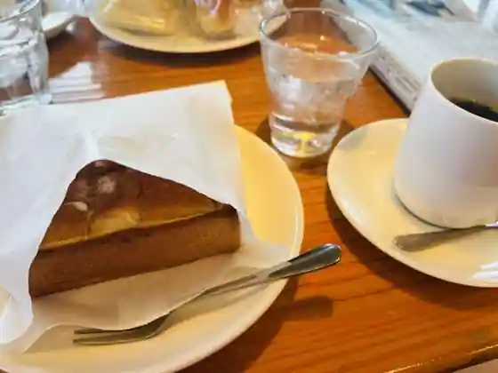
Fujimura
あるぷ
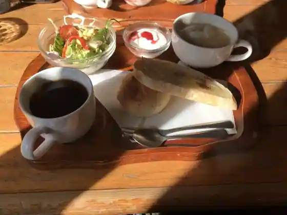
Arupu
磯ずし
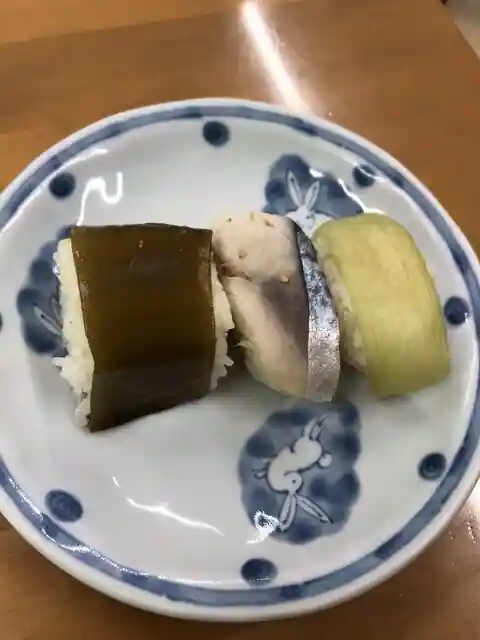
Iso Zushi
薩摩屋
Satsuma Ya
まあーりんしゅう
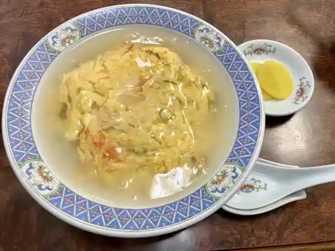
Maarinshu
大山茶屋
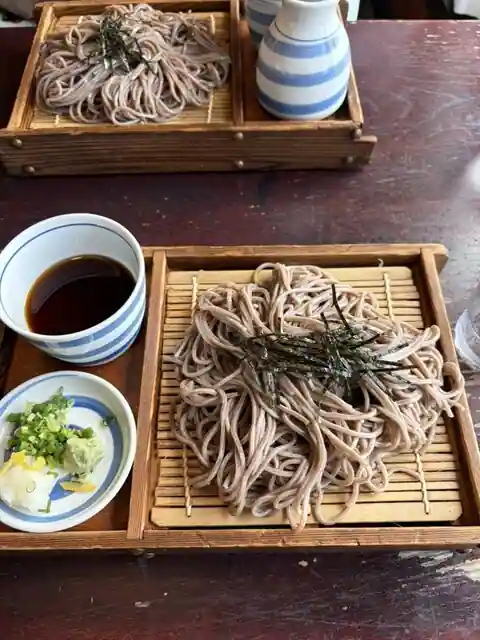
Oyama Chaya
Sights
Nora Tokei
Aki Castle Ruins

Ioki Hora

Iwasaki Yataro Seika

Aki Eki

Aki Ritsu Folk History Museum